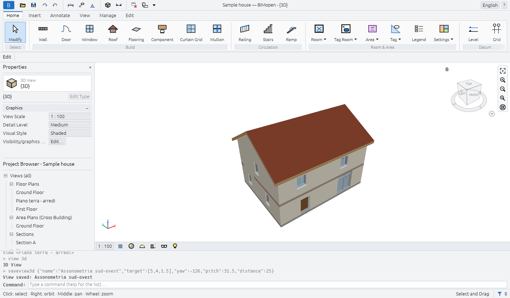
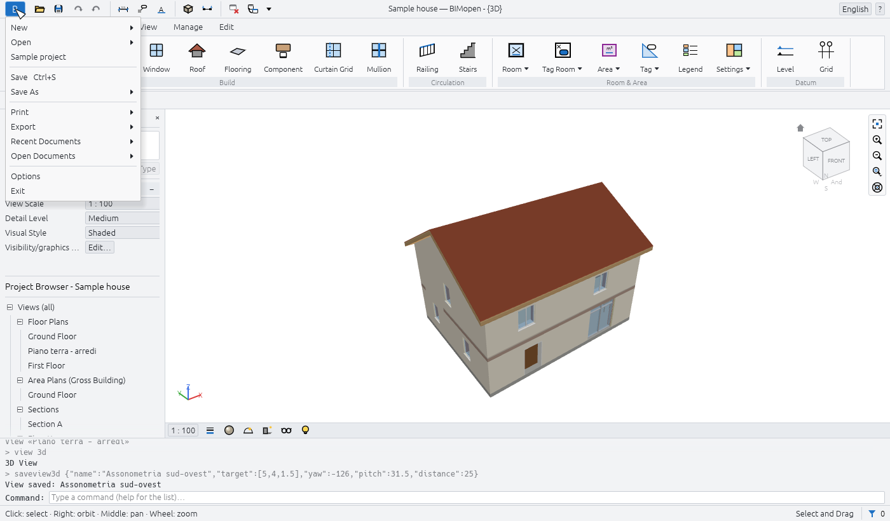
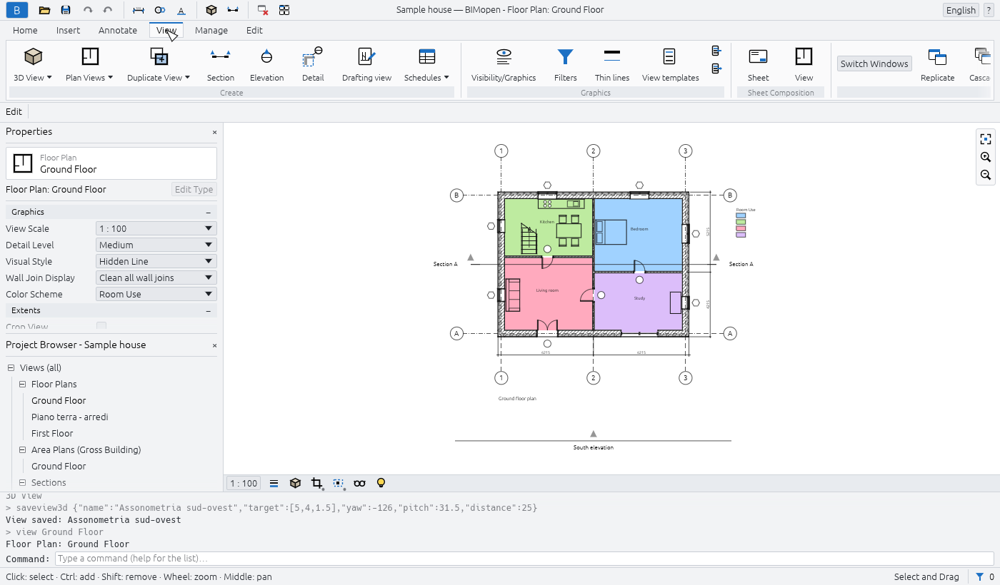
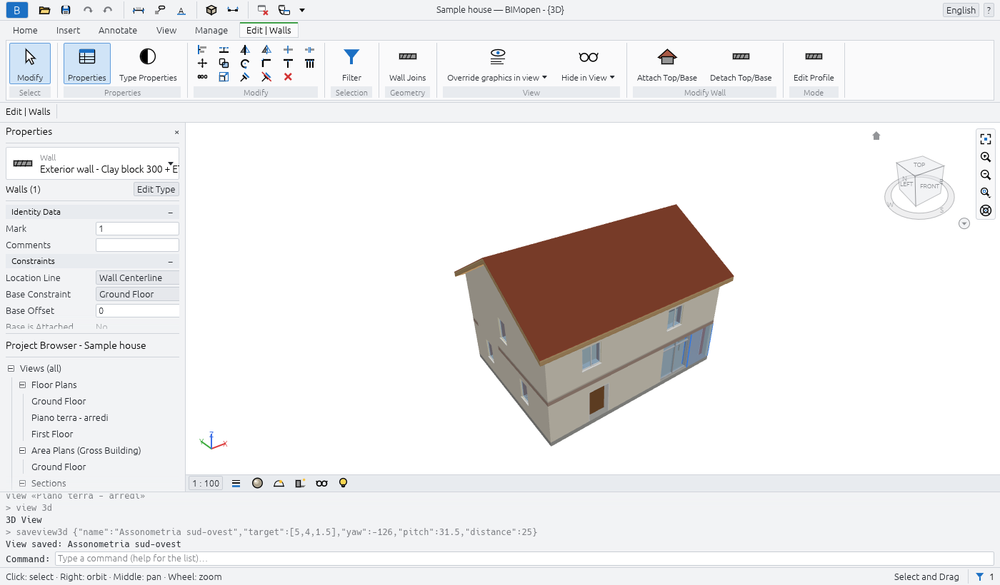
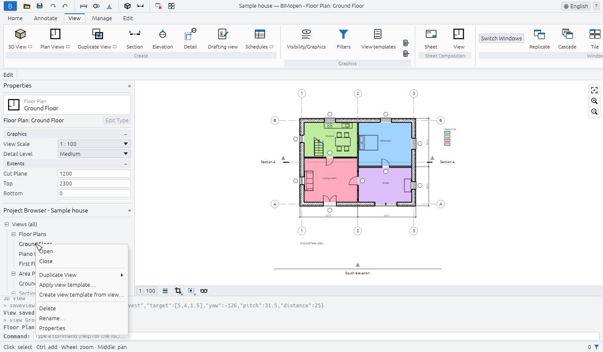
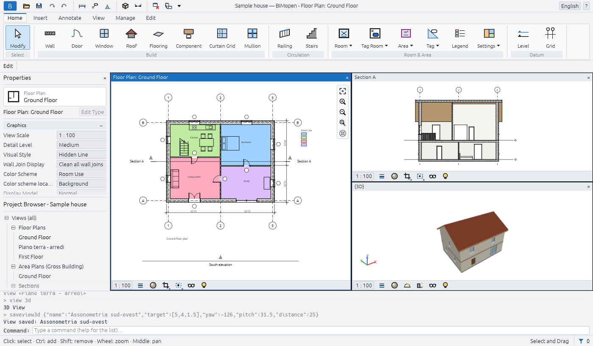
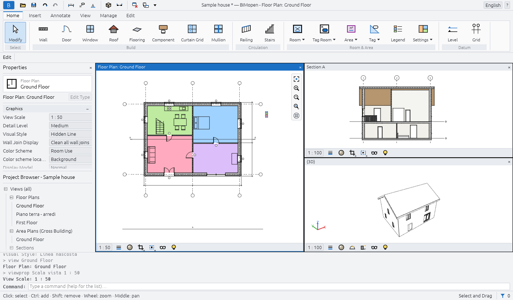

The interface
The BIMopen window has the same parts in the desktop and in the web version. From top to bottom:
- the title bar, with the application menu, the quick access toolbar, the name of the project and of the active view, the language menu and the help menu;
- the ribbon, with its tabs and panels of tools;
- the options bar, with the settings of the active tool;
- on the left, the Properties palette above the Project Browser;
- the drawing area, where the views open in windows, each with its view control bar;
- the command line, with the log of what has been done;
- the status bar.

In Arabic the whole window is mirrored: the palettes are on the right, the ribbon and the options bar read from right to left, and the navigation bar is on the left edge of the views.
Application menu
The blue B button at the left end of the title bar opens the application menu: the commands that work on the whole project.

| Item | What it does |
|---|---|
| New | Closes the current project and starts a new one from the default template: two levels with their plans, and the default types |
| Open… | Opens a .bimopen project, or imports an .rvt model, chosen in a file dialog. In the browser, drag the file into the page instead |
| Sample project | Opens the sample house |
| Save Ctrl+S | Saves the project in its file; a project never saved asks for a name, like Save As… |
| Save As… | Saves the project in a new .bimopen file and goes on working on that file |
| Print… Ctrl+P | Prints sheets to PDF |
| Export ▸ Export IFC4… | Writes the model as an IFC4 file |
| Export ▸ Export plan SVG… | Writes the active plan as an SVG drawing |
| Export ▸ Export view PNG… | Writes the active view as a PNG image |
| Open Documents | Lists the open view windows; click one to bring it to the front |
| Options | Opens the Options dialog |
| Exit | Closes BIMopen (desktop only) |
New, Open… and Sample project replace the current project without asking: save it first if you want to keep it.
Warning
Unsaved changes are lost when you choose New, Open… or Sample project. The asterisk after the project's name in the title bar tells you that there are unsaved changes.
Options
Application menu ▸ Options has two groups:
| Setting | Values | Effect |
|---|---|---|
| User Interface ▸ Language | Italiano, English, Deutsch, Français, Español, العربية | The language of the whole interface, at once |
| User Interface ▸ Theme | Light, Dark | The colours of the window. Dark also turns on Invert background color |
| Graphics ▸ Invert background color | on, off | Views with a dark background and light lines |
BIMopen remembers the language and the theme the next time it starts.
Quick access toolbar
Next to the application menu, the quick access toolbar keeps the most used commands one click away. Rest the mouse on a button to read what it does and its shortcut.
| Button | What it does |
|---|---|
| Open… (folder) | As in the application menu |
| Save (disk) | Saves, Ctrl+S |
| Undo (arrow left) | Undoes the last change, Ctrl+Z. Greyed when there is nothing to undo |
| Redo (arrow right) | Redoes the change just undone, Ctrl+Y. Greyed when there is nothing to redo |
| Aligned dimension | Starts the aligned dimension tool, DI |
| Tag All | Tags the doors and windows of the open plan that have no tag yet, TG |
| Text | Starts the text tool, TX |
| 3D View (cube) | Opens the default 3D view, {3D} |
| Section | Starts the section tool, SE |
| Close Hidden | Closes every view window except the active one. Greyed when only one is open |
| Switch Windows | Lists the open view windows; the active one is ticked |
In the middle of the title bar, when the window is wide enough, BIMopen shows the name of the project and of the active view, for example Sample house — BIMopen - Floor Plan: Ground Floor. An asterisk after the project's name means that it has unsaved changes.
At the right end:
- the language menu, a globe with the name of the current language: choose another one and the interface changes at once;
- the ? menu: Commands lists every command at the command line (as typing
help), and About shows the version, the licence and the credits.
? ▸ Help (F1) opens this manual, in the language of the interface, in the browser. F1 opens the page of what you are doing: the open dialog, the ribbon button under the mouse (its tip ends with Press F1 for more information) or the active tool.
Ribbon
The ribbon groups the tools in tabs, and each tab in panels. The name of a panel is written under its buttons. A button whose name is followed by a small mark opens a menu. Resting the mouse on a button shows what it does and, in brackets, the shortcut you can type to start it.
| Tab | Panels |
|---|---|
| Home | Select, Build, Circulation, Room & Area, Datum |
| Annotate | Select, Dimension, Text, Detail, Tag |
| View | Create, Graphics, Sheet Composition, Windows |
| Manage | Settings, Inquiry |
| Edit | The contextual tab: its panels depend on the active tool and on the selection |
The Home tab
| Panel | Buttons |
|---|---|
| Select | Modify: ends the active tool and goes back to selecting, Esc |
| Build | Wall WA, Door DR, Window WN, Roof RF, Flooring SB, Component CM, Curtain Grid CG, Mullion MU |
| Circulation | Railing RA, Stairs ST |
| Room & Area | Room RM, Separation RS, Area ▾ (Area Plan, Area Boundary Line, Area), Legend LG, Settings ▾ (Area and Volume Computations, Color Schemes) |
| Datum | Level: drawn in an elevation or a section, two clicks at the new level's height (from a plan it opens an elevation); Grid GR |
Area Boundary Line and Area work in an area plan: until one is open they are greyed, and their tip says to open an area plan first.
The Annotate tab
| Panel | Buttons |
|---|---|
| Select | Modify |
| Dimension | Aligned DI, Linear DL, Angular DA |
| Text | Text TX |
| Detail | Detail line, Filled region, Masking region, Detail component CD, Repeating detail RD, Insulation IS |
| Tag | Tag All TG |
The View tab

| Panel | Buttons |
|---|---|
| Create | 3D View ▾ (Default 3D View, Save View), Plan Views ▾ (Floor Plan, Area Plan), Duplicate View ▾ (Duplicate, Duplicate with Detailing), Section SE, Elevation EL, Detail DT (a callout), Drafting view VD, Schedules ▾ (Schedule/Quantities, Predefined schedules) |
| Graphics | Visibility/Graphics VG, Filters, View templates, and two small buttons: Apply template to current view, Create template from current view |
| Sheet Composition | Sheet: a new sheet with the title block you choose; View: places a view on the open sheet |
| Windows | Switch Windows, Replicate, Cascade, Tile, Maximize, Close Hidden, User Interface |
Save View works only while a 3D view is open, Duplicate with Detailing only for views that are not 3D, and Sheet Composition ▸ View only while a sheet is open.
The Manage tab
| Panel | Buttons |
|---|---|
| Settings | Materials, Project information, Object styles, Line styles, Purge unused, Project units UN, Snap, and Additional settings (Line styles, Fill patterns) |
| Inquiry | Check: checks the openings and references of the model and reports at the command line |
Snap turns snapping on and off for the whole program: it is highlighted while on.
The contextual tab
When you start a tool or select something, the ribbon switches by itself to the last tab, which takes the name of what you are doing: Edit | Place Wall while drawing walls, Edit | Walls with walls selected, Edit | Multi-Select with elements of different categories. The tab is marked with its own colour. When the tool ends, or the selection is cleared, the ribbon goes back to the tab you were using.

It always has these panels:
| Panel | Buttons |
|---|---|
| Select | Modify |
| Properties | Properties: shows or hides the Properties palette; Type Properties: the properties of the type of the selection, or of the next element the tool will place |
| Modify | Seventeen small tools in three rows: Align AL, Offset OF, Mirror - Pick Axis MM, Mirror - Draw Axis DM, Split Element SL, Split with Gap SG; Move MV, Copy CO, Rotate RO, Trim/Extend to Corner TR, Trim/Extend Single Element, Trim/Extend Multiple Elements; Array AR, Scale RE, Pin PN, Unpin UP, Delete (Del) |
Delete works only when something is selected. The selecting and modifying chapter describes the Modify tools.
Other panels appear for what is selected or for the tool:
| When | Panel and buttons |
|---|---|
| Anything selected | Selection: Filter (see Selecting and modifying) |
| Doors or windows selected | Opening: Flip facing, Flip hand |
| Walls selected | Modify Wall: Attach Top (the walls rise to the roof above them), Detach Top |
| A level selected | View: Open plan |
| Sections or elevations selected | Section: Split Segment (sections only), Flip, Go to View |
| A callout selected | Detail: Go to View |
| Curtain walls selected | Curtain Wall: Curtain Grid, Mullion, Panel |
| Flooring or Roof tool | Draw: Boundary Line, Pick Walls |
| Stairs or Railing tool | Mode: Finish Edit Mode; Draw: Run or Lines |
| Mullion tool | Placement: Grid Line, Grid Line Segment, All Grid Lines |
| A detail tool | The drawing shapes of the tool |
Options bar
Under the ribbon, the options bar starts with the name of the contextual tab, then shows the settings of the active tool. They apply to the next elements you place. At its end, while a tool is active, it shows the level you are working on: Level: Ground Floor.
| Tool | Settings on the options bar |
|---|---|
| Wall | Height or Depth; the level the wall reaches, or Unconnected with its value; Location Line; Chain; Offset; Radius (greyed: curved walls are not available yet); Exterior on the left or Exterior on the right (the space bar swaps them) |
| Roof | The shape: Gable, Hip or Flat; Slope, from 5° to 60°; Overhang, up to 2 m |
| Stairs | Width, in millimetres; Railing Type, or None |
| Dimensions | What the cursor picks first on a wall: Wall centerlines or Wall faces |
| Detail (callout) | The scale of the new detail view, or Reference other view and the detail or drafting view the callout points at (always on in a drafting view) |
| Area Boundary Line | Line or Pick lines; with Pick lines, Apply area rules or an Offset |
| Tools that draw lines | Ortho (Shift): horizontal and vertical segments only; Snap: snapping to endpoints, midpoints and intersections |
With Ortho (Shift) off, holding Shift while drawing gives the same constraint; with it on, Shift releases it.
Properties
The Properties palette shows and changes the parameters of what you are working on. From top to bottom it has:
- the type selector: the family in small letters and the type underneath. Click it to choose another type: the selected elements change type, or, while a tool is active, the next element gets that type;
- a row with what the palette is showing, for example Walls (1) or New Wall, and the Edit Type button, which opens the type properties;
- the parameters, in groups (Constraints, Graphics, Identity Data…). Click the name of a group to fold it. Values in grey are read-only: they are computed from the model;
- the Apply button, which confirms a value you are typing. Enter does the same.
What the palette shows depends on the situation:
| Situation | The palette shows |
|---|---|
| Nothing selected, no tool | The properties of the active view (scale, detail level, visual style…), or of the view clicked in the Project Browser |
| A tool active | The type of the next element, as New Wall, New Door… |
| One element selected | Its type and its instance parameters |
| Several elements of one category | Their number, as Walls (3) |
| Elements of different categories | Multi-Select, Common (5), and how many of each category, as 3 × Walls |
Lengths are written and read in the project's units (millimetres in a new project). You can type
a value with its unit, for example 2.7m.
To close the palette, click × on its title; to show it again, use View ▸ Windows ▸ User Interface ▸ Properties or the Properties button of the contextual tab.
Project Browser
The Project Browser lists the views, schedules, sheets and families of the project in a tree. Its title carries the name of the project. Click ⊟ or ⊞ to fold or unfold a branch.

| Branch | What it contains |
|---|---|
| Views (all) ▸ Floor Plans | The floor plans of every level, from the lowest, and the callouts drawn in plans |
| Views (all) ▸ Area Plans (…) | The area plans, one branch per area scheme |
| Views (all) ▸ Sections, Elevations | The sections and the elevations |
| Views (all) ▸ Detail Views | The callouts drawn in sections |
| Views (all) ▸ 3D Views | {3D}, the default 3D view, and the saved 3D views |
| Views (all) ▸ Drafting views | The drafting views |
| Schedules/Quantities | The project's schedules, then the predefined schedules |
| Sheets (all) | The sheets, as number - name |
| Families | The types of the project, by category: walls, doors, windows, floors, roofs, components and the others |
The branches of area plans, sections, elevations, detail views and drafting views appear only when they have something in them. The active view is written in bold.
With a view:
- a click shows its properties in the Properties palette, without opening it;
- a double-click opens it;
- a right-click opens its menu: Open, Close (closes its windows), Duplicate View ▸ (Duplicate, Duplicate with Detailing), Apply view template…, Create view template from view…, Delete, Rename…, Properties.
The menu of a sheet has Apply view template to all views… instead of the two template items, and no Duplicate View. {3D} cannot be deleted or renamed.
With a schedule of the project, a click selects it, a double-click opens it, and the right-click menu has Open, Schedule Properties… and Delete. A predefined schedule opens with a click.
With a type, under Families, a double-click opens its type properties; the right-click menu has Type Properties, Duplicate…, Create Instance (starts the tool that places it, with that type) and Delete.
Drawing area and view windows
Every view you open is a window in the drawing area. A view opened again comes to the front; at least one window always stays open. View ▸ Windows arranges them:
| Button | What it does |
|---|---|
| Switch Windows | Lists the open windows; the active one is ticked |
| Replicate | Opens a second window on the active view, with its own zoom |
| Cascade | Overlapping windows, each with its title bar: drag a title to move a window, its edges to resize it |
| Tile | All the windows side by side, each with a title bar; the active one has a blue title and frame |
| Maximize | The active window fills the drawing area; the others wait underneath |
| Close Hidden | Closes every window except the active one |
| User Interface | Shows or hides the Project Browser, Properties, the Command line, the Status bar and the Navigation bar |

Click in a window to make it active: the tools work in the active window, the others only show the model. In Tile and Cascade, the × on a window's title bar closes it.
View control bar
At the bottom of every plan, section, elevation, callout and drafting view:
| Control | What it does |
|---|---|
| The scale, for example 1 : 100 | Opens the list of scales; under Custom type another one, as 1 : 75, and press Enter |
| Detail level | Coarse, Medium or Fine |
| Crop View | Crops the view to its crop region, or stops cropping; a blue dot shows it is on |
| Show Crop Region | Shows or hides the crop region's frame; a blue dot shows it is on |
| Temporary Hide/Isolate | Hides or isolates elements or categories in this view until you reset it; framed while active |
In a 3D view, the bar has the Visual style (Wireframe, Hidden Line, Shaded, Shaded with Edges, Consistent Colors) and Temporary Hide/Isolate. A sheet has no view control bar: its views have their own scale.

Navigation bar
On the right edge of the active view (the left edge in Arabic), three buttons: Zoom to Fit (the same as Home), Zoom In and Zoom Out.
Moving around in the views
| In plans, sections, elevations and sheets | |
|---|---|
| Mouse wheel | Zooms in and out at the cursor |
| Drag with the middle button | Pans |
| Drag with the left button | A selection window, or moves the selected elements (Selecting and modifying) |
| Home | Fits the whole view in the window |
| In 3D views | |
|---|---|
| Drag with the right button, or Shift + middle button | Orbits around the model |
| Drag with the middle button | Pans |
| Drag with the left button | A selection window, or moves the selected elements |
| Mouse wheel | Zooms in and out |
| Home | Fits the whole model in the window |
A small tripod in the lower corner of the 3D view shows the directions of the axes: X red, Y green, Z blue. A saved 3D view remembers where you left it.
The context menu of a view
Right-click in a view while no tool is active. If the cursor is on an element that is not selected, the element is selected first. The menu has:
- Cancel: clears the selection;
- Select All Instances ▸ Visible in View or ▸ In Entire Project: the elements of the same type; Select Previous: the selection made before;
- Hide in view ▸ Elements or ▸ Category: hides the selected elements, or their whole categories, in this view;
- Override graphics in view ▸ By category…: opens Visibility/Graphics on the categories of the selection;
- Visibility/Graphics….
While a tool is active, a right-click does what Esc does: it cancels the step in progress.
Command line
Under the drawing area, the command line shows the log of what has been done, the most recent at
the bottom: the commands run, in grey after a >, their results, and errors in red. On its last
row, the prompt says what the active tool expects, for example WALL next point [Esc to
finish]:, or Command: when no tool is active.
You do not need to click it: whatever you type while no field is being edited goes to the command line. Enter runs the line; Up and Down bring back the lines typed before. The command line chapter describes the commands.
Status bar
On the left, the status bar shows:
- while a tool is active, what the tool expects (the same prompt as the command line);
- with no tool, the category and the type of the element under the cursor, as Walls : Exterior wall - Clay block 300 + ETICS;
- while you drag, the length of the move, as Move: 1500;
- otherwise a reminder of the mouse: Click: select · Ctrl: add · Shift: remove · Wheel: zoom · Middle: pan in plans, Click: select · Right: orbit · Middle: pan · Wheel: zoom in 3D.
On the right, the number of selected elements and a funnel: click the number to open Filter. Then Select and Drag, which lets you drag elements without selecting them first; in a plan, also the coordinates of the cursor in metres.
Selecting, in short
The selecting and modifying chapter describes selection in full. The essentials:
- click an element to select it; click an empty point to clear the selection;
- Ctrl + click adds an element to the selection, Shift + click takes it out; Tab highlights the next element under the cursor, or a chain of joined walls;
- drag from left to right to select what is entirely inside the rectangle, from right to left to select what it touches;
- drag a selected element to move it;
- Ctrl+A selects the elements of the open plan's level, or of the whole model in a 3D view; Del deletes the selection; Esc clears it.